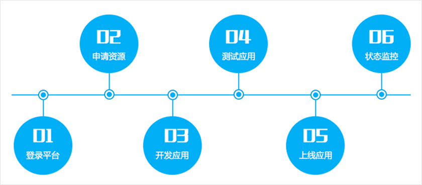

<div class="ns-contentComponent">
    <div class="ns-content">
        <div class="ns-content-head">
            服务开发环境
        </div>
        <div class="ns-article">
            <div class="container-fluid">
                <div class="col-md-12">
                    <div class="ns-articleText">
                        <p>应用控制台平台提供丰富的开发资源和模板，包括测试资源申请、生产资源申请、环境配置、测试功能、上线功能、数据
                            库功能、状态监控，以及代码托管、持续集成功能。</p>
                    </div>
                    <div class="ns-articleText">
                        <h4>应用发布流程</h4>
                    </div>
                    <div class="row">
                        <div class="col-md-9">
                            <div class="ns-articleImgWrap">
                                
                            </div>
                        </div>
                         <div class="col-md-2">
                    <div class="ns-article-sider">
                        <div class="siderLink">
                            <div class="imgWrap">
                                
                            </div>
                            <span>申请资源</span>
                        </div>
                    </div>
                </div>
                    </div>
                    
                </div>
            </div>
        </div>
    </div>
</div>